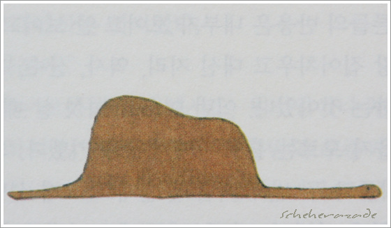
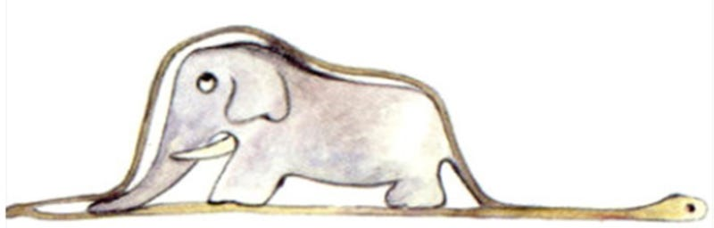

print("Hello, world!")
# 안녕 세상아~!
여섯 살 때 나는 원시림에 관한 이야기가 있는 '실제 경험담'이라는 책에서 멋진 그림 하나를 보았다. 그것은 코끼리를 집어삼키고 있는 보아뱀 그림이었다. 위의 그림이 그것을 복사한 것이다. 그 책에는 이렇게 씌어 있었다. "보아뱀은 먹이를 씹지 않고 통째로 삼킨다. 그리고 나서 몸을 움직일 수 없게 되어 여섯 달 동안 잠을 자면서 먹이를 소화시킨다." 나는 정글의 모험들에 대해 깊이 생각해 보았다. 그리고 나는 색연필로 나의 첫 번째 그림을 그리는 데 성공했다. 나의 그림 제1호였다. 그것은 이렇게 생겼다. 나는 나의 걸작을 어른들에게 보여주며 그림을 보고 무서워하는지 물어보았다. 어른들은 "모자가 무서워 보이긴 하네."라고 대답했다. 내 그림은 모자가 아니었다. 그것은 코끼리를 소화하고 있는 보아뱀이었다. 그래서 나는 어른들이 이해할 수 있도록 보아뱀의 속을 그렸다. 어른들은 항상 설명이 필요하다. 나의 그림 제2호는 이렇게 생겼다.
- 어린왕자 전문, 앙투안 마리 장바티스트 로제 드 생텍쥐페리 Antoine Marie Jean-Baptiste Roger de Saint-Exupéry
|  |  |